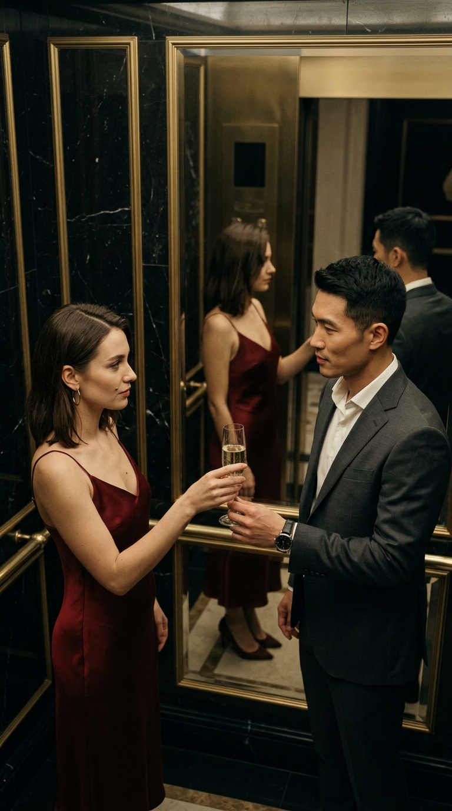
A complete breakdown of an original short film scene — the exact workflow from your job description: beats → shot list → blocking → AI image prompts → continuity bible. Every frame generated in one session with a frontier image model (Google Gemini / Nano Banana); breakdown and prompt system built with Claude.
The twelve frames cut together against the shot timings — the same review pass a director gets before production. Space toggles play, arrows step shots, or click any segment to jump.
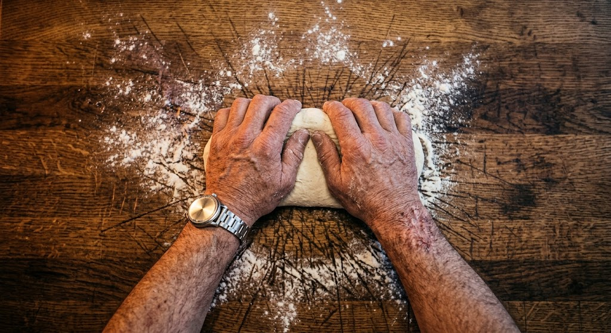
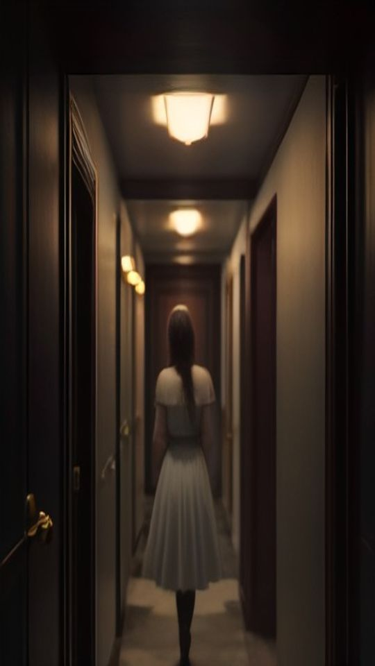
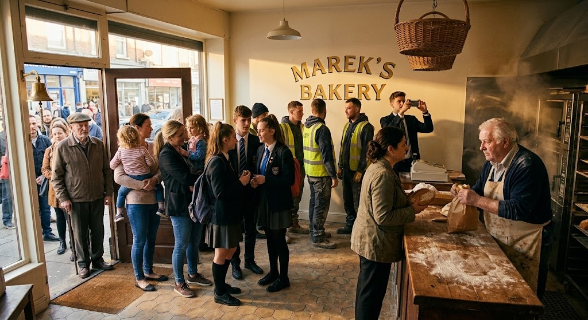
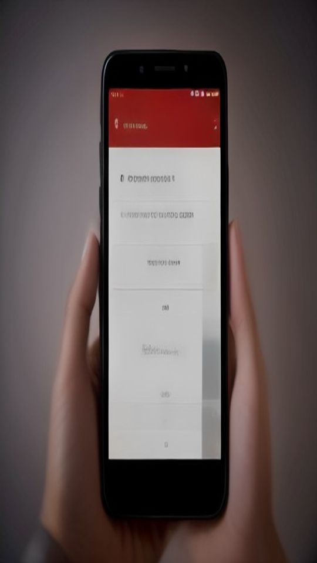
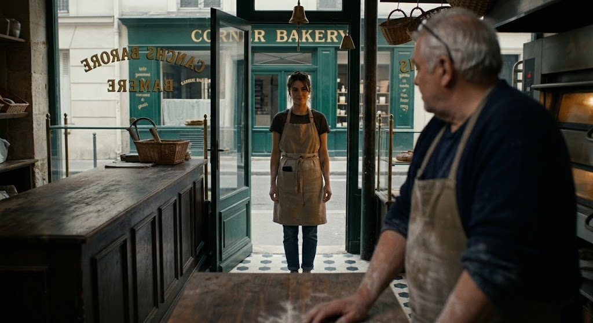
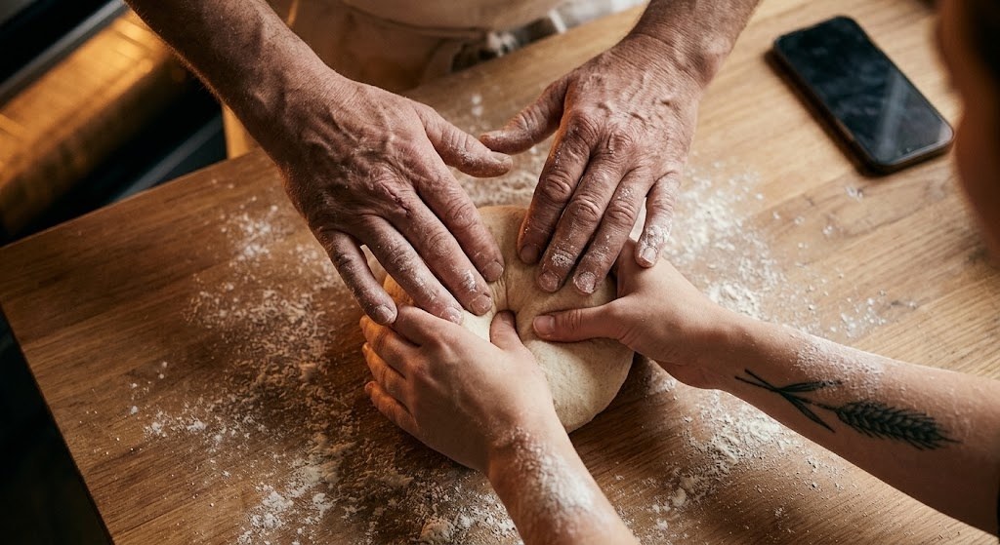
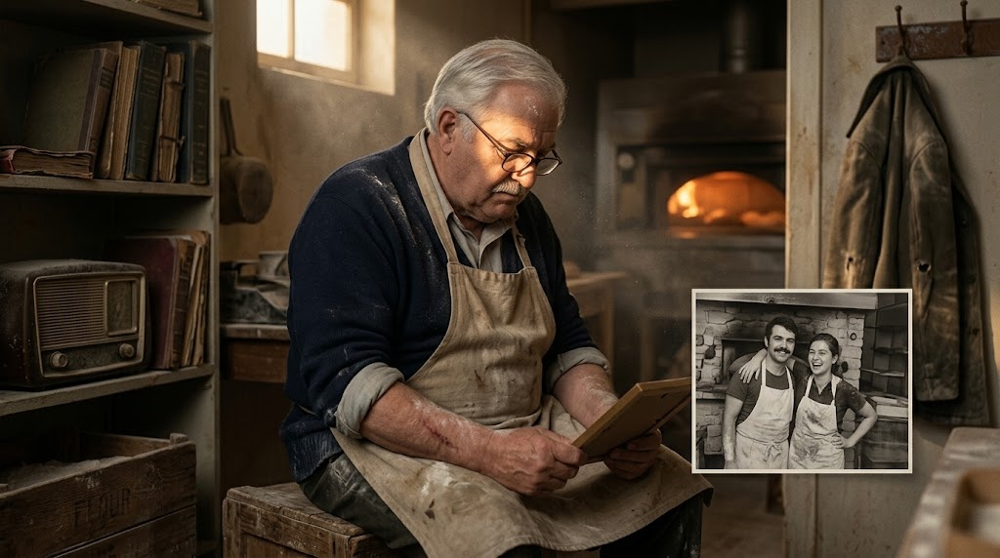
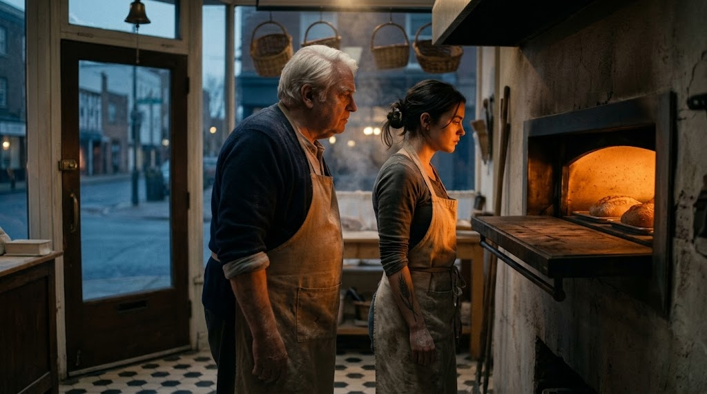
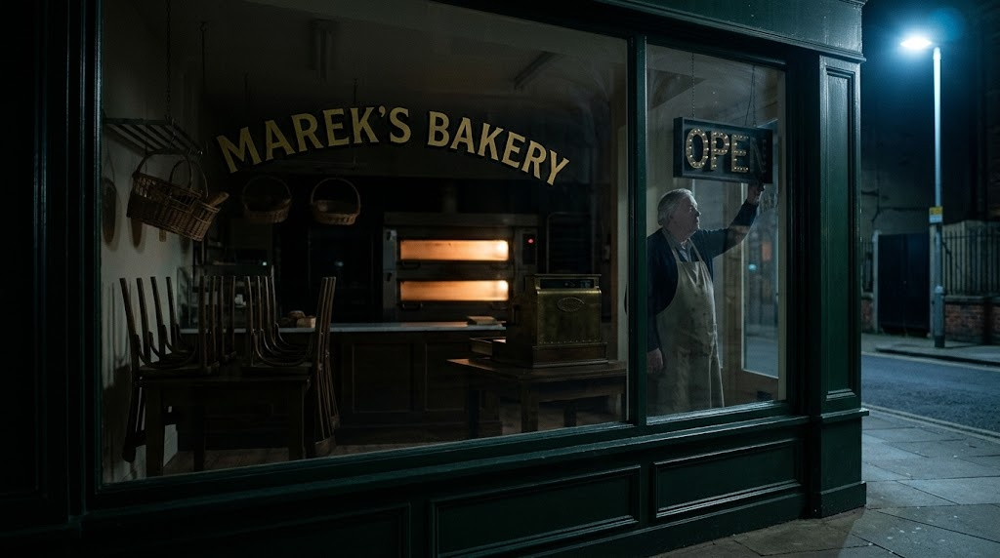
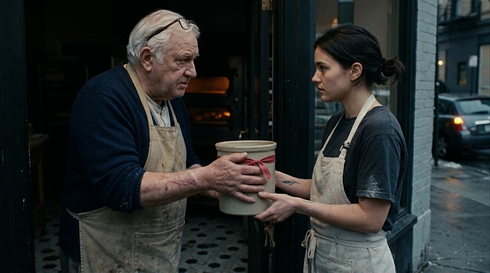
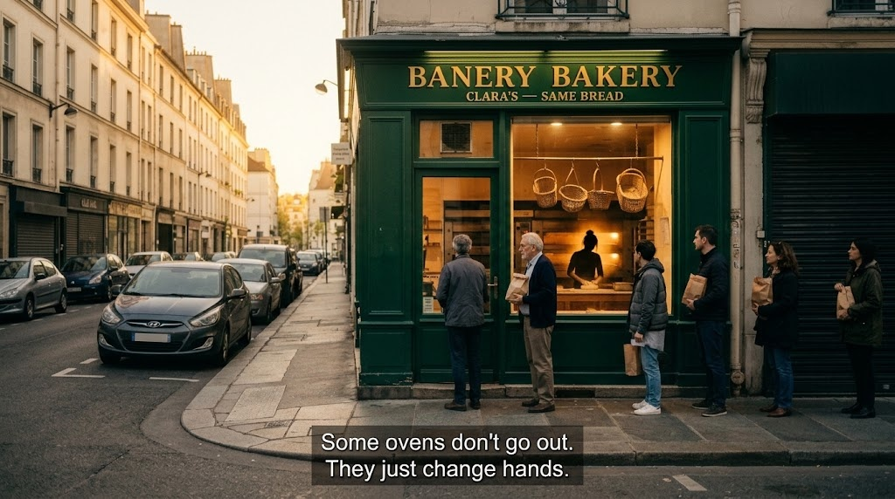
S1 · ESTABLISHING TC 00:00All twelve frames generated in one Gemini thread with the locked prompts from section 07 — faces, wardrobe, sign copy and oven glow held constant across every generation. Click any frame to inspect it full-size.
The corner shop at night — steam, warm window, FINAL DAY card already in the glass. The audience reads the premise in one frame.
Theme frame: old knuckles and young wrists on one dough. No faces needed — the story is the rhythm.
Marek tapes the card his reflection already wrote: FINAL DAY — EVERYTHING MUST GO — THANK YOU FOR 50 YEARS. Sign copy locked verbatim.
The neighbourhood floods in — kids, builders, phones up. Peak occupancy frame; every later shot must feel emptier than this.
Flat cap, counted coins, the last loaf. Two men who never needed conversation — and today have none.
Closing time. Clara stands in the doorway with her apron already on — she's not buying bread, she's asking for it.
The S2 frame returns, tighter: her hands under his, the fold correct, the phone face-down in the flour.
Back room. Marek and a curling photograph — him and his wife, forty years younger, in front of the same oven.
Two silhouettes, one fire. She loads the peel; he watches and lets her. The whole decision, played on posture.
At the threshold: the starter crock with its red ribbon — fifty years of sourdough — passed with the keys.
Dawn, chairs stacked, ovens warming. Marek flips the sign to OPEN one last time — for her.
Golden hour, queue to the corner, sign re-lettered: CLARA'S — SAME BREAD. Caption: some ovens don't go out.
A closing chapter, not a cliffhanger — deliberately chosen to test the hardest AI continuity problem: one elderly face, one young face, one location, and props that must survive twelve generations (the sign, the crock, the tattoo). If the board holds, the pipeline holds.
On the last day of a fifty-year bakery, Marek meets the stranger who will bake tomorrow's bread — and lets the ovens change hands.
Each beat is a generation unit: one emotional state per beat keeps faces, wardrobe and lighting coherent when images are produced in batches. Thumbnails jump to the frame.
The shop, the craft, the goodbye. Plant the three continuity props early — the FINAL DAY card, the flour, the oven glow — because every later generation must answer to them.
No dialogue carries this beat: a doorway, hands teaching hands, a photograph of the dead, a shared night shift. Marek decides with his shoulders before he says a word.
The crock and the keys cross the threshold at dawn — inheritance in one object. The sign changes name; the queue doesn't notice. Tag on the caption card.
Landscape compositions with the humans on the thirds; two top-down inserts carry the theme so faces are never asked to do exposition. One hard rule: the counter axis never flips, so screen direction stays stable across all twelve generations. Click a row to see the frame.
| # | Beat | Framing | Camera | Eyeline / axis | Action | |
|---|---|---|---|---|---|---|
| S1 | B1 | EXT establishing, corner angle | C1 · across the junction, static | no faces — shop is the subject | Steam, lit sign, FINAL DAY card plants the card + facade props | |
| S2 | B1 | Top-down macro, hands on dough | C2 · overhead 0.8m | n/a — hands only | Old + young hands, one dough theme frame — bookends at S7 | |
| S3 | B1 | Mid through window glass | C3 · sidewalk, reflections kept | Marek's reflection over his shoulder | Taping FINAL DAY — EVERYTHING MUST GO card sign copy locked verbatim | |
| S4 | B1 | Wide interior, door side | C4 · by the bell, 24mm | crowd converges on counter | Last-day crowd, phones up sets max occupancy for later empties | |
| S5 | B1 | Two-shot over counter | C5 · counter front, eye height | customer ↔ Marek, level | Coins counted, last loaf handed over farewell without dialogue | |
| S6 | B2 | OTS over Marek to doorway | C6 · behind M's L shoulder | Clara's eyeline straight down counter axis | Clara in the doorway, apron on the stranger is not a customer | |
| S7 | B2 | Top-down insert, tighter | C2 return · overhead 0.7m | n/a — hands only | Hands teaching hands; phone face-down mirrors S2 — inheritance in miniature | |
| S8 | B2 | Medium, back room | C8 · static 50mm, window key | Marek down at the photograph | Photo of him and his wife at this oven the reason he almost says no | |
| S9 | B2 | Profile 2-shot at the oven | C9 · across the bakehouse | both faces to the fire, no eyeline contest | She loads the peel; he only watches the decision, played on his posture | |
| S10 | B3 | Mid 2-shot at threshold | C10 · street side, morning | hand to hand, crock centre-frame | Starter crock + keys change hands whole story in one prop | |
| S11 | B3 | Interior reverse, through window | C11 · inside looking out | Marek to the street, back half-turned | OPEN flipped at dawn, chairs stacked not his shift — his gift | |
| S12 | B3 | EXT hero wide, golden hour | C1 return position, warm grade | queue toward camera | CLARA'S — SAME BREAD; caption card same angle as S1 — time passed, axis kept |
The framing logic behind the board: shop geometry fixed once, camera positions reused, and one hard rule — the counter axis runs north–south, so S1/S12 share an angle across time and S6's eyeline never flips screen direction between generations.
Every prompt is assembled from four locked blocks — style, character, location, then the shot. Paste as-is; no retouching needed. Changelog discipline below.
Mid-70s, wavy white hair, ruddy cheeks, navy knit sweater with rolled sleeves under a flour-dusted cream canvas apron; wire reading glasses worn on his head or nose; thin scar on the right forearm.
Late 20s, dark brown hair tied back in a low bun, wheat-stalk tattoo on the left forearm, charcoal-olive t-shirt, cream canvas apron with keys hooked at the hip.
Corner bakery: dark green facade with gold serif sign "MAREK'S BAKERY", wicker baskets hanging in the window, black-and-white checkered tile floor, flour-scoured wooden counter, glowing brick wood-fired oven, brass bell over the door; outside — wet cobblestones, a blue street lamp.
Cinematic photorealism, landscape 16:9, shallow DOF, 35mm, warm tungsten against cool dusk light, muted palette with deep green and gold accents, fine film grain. No watermark, no logo.
S3 v1→v2: sign text garbled by the model — locked the card copy verbatim in quotes and re-gen. S6 v2→v3: Clara's tattoo moved to the left forearm to match S2/S7/S10; apron locked to cream. S12 v1→v2: facade re-lettered "CLARA'S — SAME BREAD" and queue density raised. Logged per shot — same record kept for every retake.
One thread for all twelve frames, edits requested in place instead of fresh rolls; S3 and S12 carry the most history because sign text is the hardest continuity prop. Failed gens never re-rolled blind — the prompt moves first.
This page is the job description, executed. A script was broken into beats and shots, blocking was drawn against a hard axis rule, and every frame got a locked, paste-ready prompt derived from a continuity bible — then generated, checked against the locks, and re-prompted until the board held. Twelve frames, one thread, faces and props intact. That is the loop this role runs daily.
My background: Higher education in Computer Sciences and Systems (academy diploma), freeCodeCamp certifications, hands-on prompt engineering with Claude and ChatGPT (RAG projects, PDF-to-Excel automation), and interactive 3D/portfolio work — I care about frames, light and where continuity breaks.
Images: Google Gemini (Nano Banana) · Breakdown, blocking and prompt system: Claude. Ready to run the same process on your scripts — in your standards, with your reference locks, at production speed.
Portfolio: lukatkem.github.io · GitHub: github.com/lukatkem